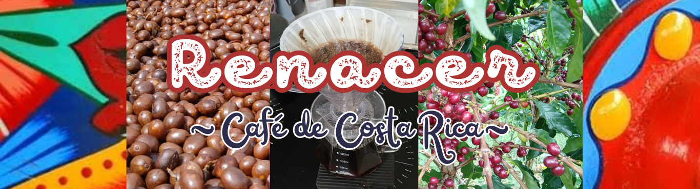
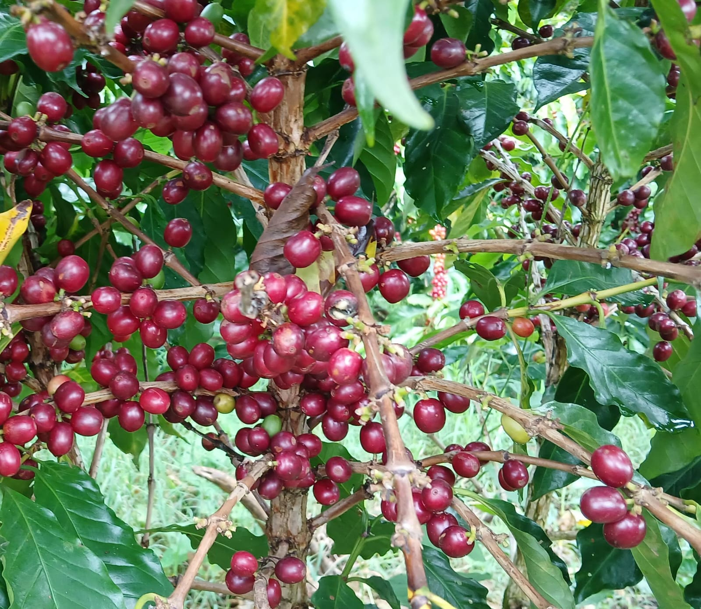
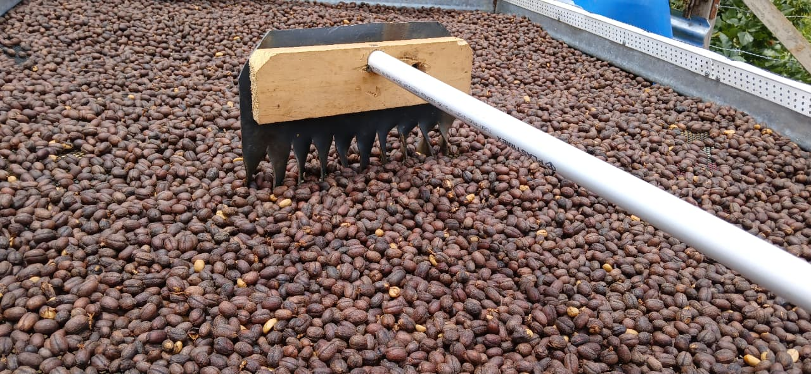
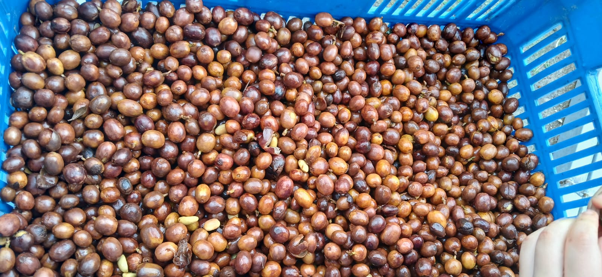
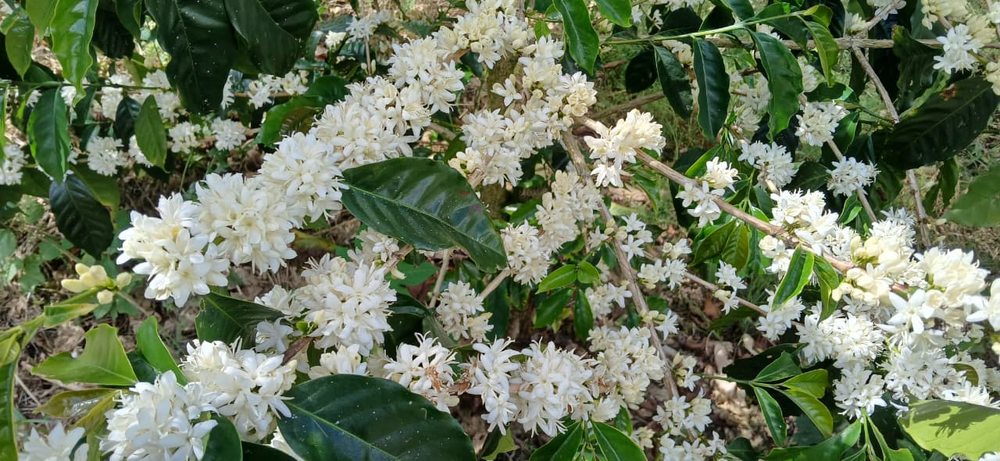
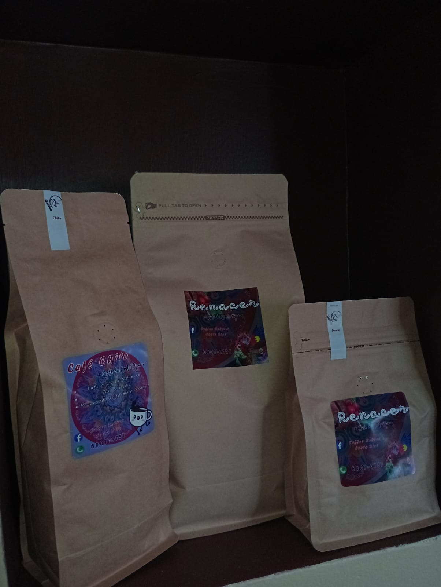
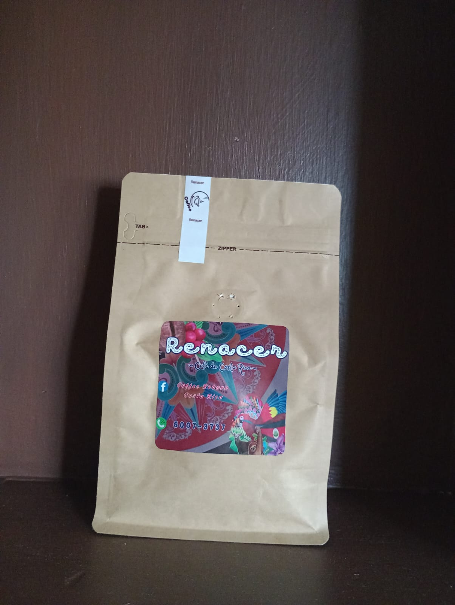
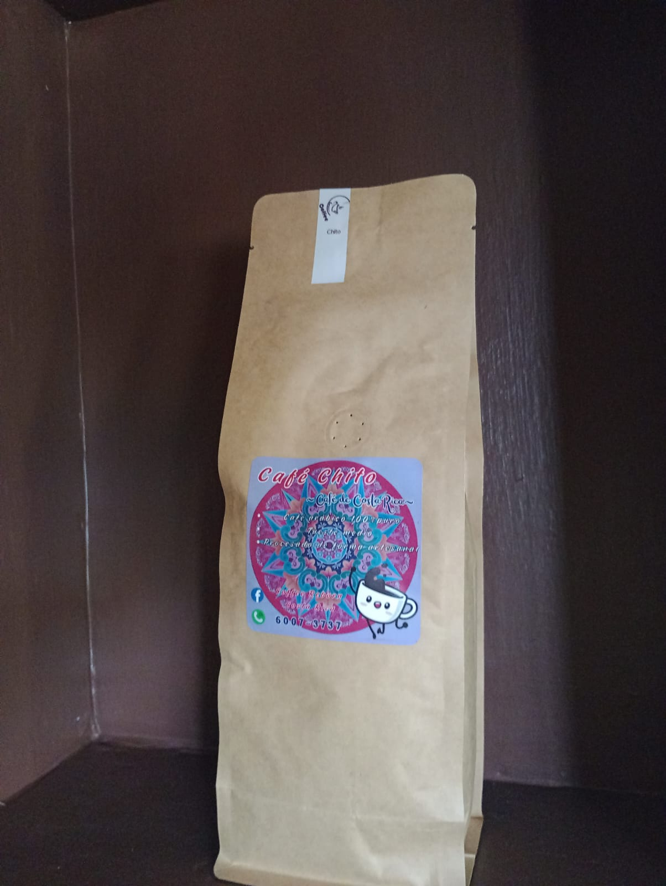
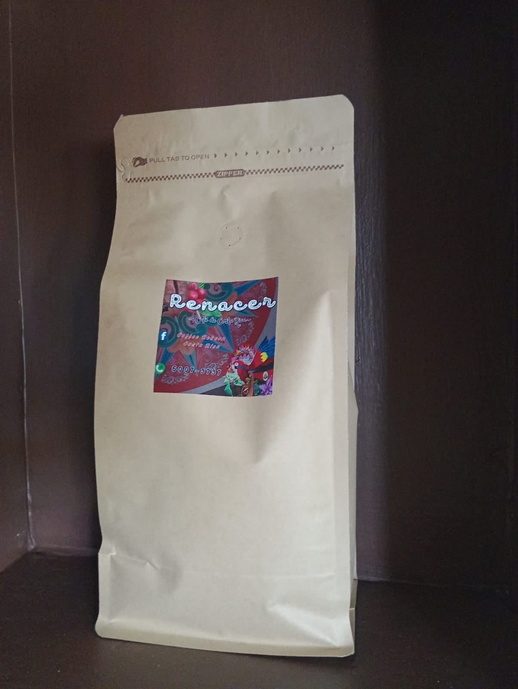

COSTA RICA
Finca Café Chito
Un entorno de montaña donde el café crece rodeado de naturaleza.
- ⛰️ Café de altura
- 🌱 Cultivo responsable
- 🇨🇷 El Guarco, Cartago

Aroma que conecta con el origen
Desde las montañas de Costa Rica, llevamos hasta tu taza la esencia, tradición y pasión por el buen café.
Café Chito representa la conexión entre la tierra, las personas y una taza de café preparada para disfrutarse.
Nuestro café nace en las montañas de Costa Rica, donde la altura, el clima y el cuidado de nuestros cafetales ayudan a desarrollar las características que hacen especial cada grano.
Descubrir nuestra historia →Selección y cuidado en cada etapa.
Cultivado en las montañas de Costa Rica.
Respeto por nuestra tierra y nuestros cafetales.
Cada taza de Café Chito representa una parte de nuestra identidad cafetalera.

Todo comienza con una planta de café. Un pequeño cultivo que, con dedicación, tiempo y cuidado, se convierte en el fruto que dará origen a una gran taza.
En las montañas de Costa Rica, la naturaleza proporciona las condiciones ideales para desarrollar cafés con características únicas.
Detrás de cada grano existe el trabajo de personas que conocen y respetan el proceso del café.
Desde la selección del fruto hasta el procesamiento y tostado, cada etapa influye en el resultado final.

Después de la cosecha, el café continúa un recorrido en el que el procesamiento, secado y tostado permiten desarrollar diferentes aromas y sabores.
El resultado es Café Chito: una experiencia que conecta cada taza con su origen.
Café de Costa Rica
Metros sobre el nivel del mar
Café de alta calidad
Selección cuidadosa
El carácter de nuestro café comienza en las montañas donde se cultiva.
Un entorno de montaña donde el café crece rodeado de naturaleza.
Cada cosecha comienza con la selección de los frutos que alcanzan el punto adecuado de maduración.

ORIGENEl clima, la altura y el suelo forman parte de la identidad de nuestro café.
El sabor final del café depende de cada una de las etapas de su proceso.
Se seleccionan los frutos que presentan el nivel adecuado de maduración.

Los frutos pasan por una selección para mantener únicamente aquellos que cumplen con los estándares deseados.
El calor transforma el grano y permite desarrollar sus aromas, sabores y cuerpo.

El café es protegido para conservar su frescura y características hasta llegar a tu hogar.
El proceso lavado suele destacar por perfiles más limpios, definidos y con una acidez agradable.
Perfil limpioConserva parte del mucílago del fruto durante el secado, aportando dulzura y características particulares.
Perfil dulceEl fruto se seca con su pulpa, permitiendo desarrollar perfiles aromáticos y frutales.
Perfil frutalDescubre las características que hacen de Café Chito una experiencia especial en cada preparación.
Aroma intenso · Dulzura · Cuerpo · Balance
Elige la presentación que más disfrutas.

Presentación ideal para disfrutar Café Chito en casa.

Una presentación perfecta para quienes disfrutan café todos los días.

Para quienes quieren tener Café Chito siempre disponible.
Pequeños detalles pueden hacer una gran diferencia.

Ideal para disfrutar los aromas y características del café.

Una preparación sencilla que permite disfrutar un café con buen cuerpo.
Una forma de preparación que conecta con la tradición cafetalera costarricense.
Utiliza agua de buena calidad.
Muele el café justo antes de prepararlo.
Respeta la proporción entre café y agua.
Evita utilizar agua excesivamente caliente.
Disfruta el café recién preparado.
Antes de convertirse en un fruto, el cafeto produce pequeñas flores blancas con un aroma característico.
El tueste influye directamente en el aroma, sabor, cuerpo y percepción del café.
Costa Rica es reconocida internacionalmente por la calidad de sus cafés.
La selección del fruto maduro es una de las etapas fundamentales para obtener un café de calidad.
Somos parte de la tradición cafetalera de las montañas de Costa Rica.
Vara del Roble, El Guarco, Cartago, Costa Rica.
6007-3737
Costa Rica
Ven a conocer el lugar donde nace nuestra pasión por el café de Costa Rica.
Café Chito
Vara del Roble,
El Guarco, Cartago,
Costa Rica.
Un espacio donde el aroma, la tradición y la calidad se encuentran.
Escríbenos para realizar tu pedido, conocer nuestras presentaciones o consultar cualquier información.